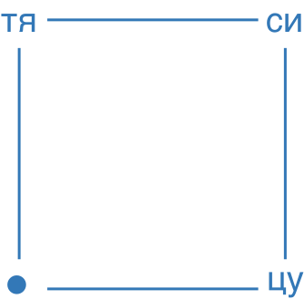

тя—си—цу—цифровое пространство для ценителей чайной культуры

1 — причина

2 — процесс

3 — состояние
о нас
чайная культура существует не вокруг одного чая, она включает в себя процесс, состояние, ощущение, действие. тясицу—медиапространство, в котором вы можете получить тексты о чае, о его традициях и возможностях, личный эксперимент и состояние вдумчивости и уединения в одной из наших воображаемых комнат
принцип вдумчивости
принцип вдумчивости заключается в том, что для нас важно, чтобы вы могли провести время без спешки, уединенно в воображаемой цифровой комнате, где найдете для себя возможность узнавать новое или вчитываться в уже знакомое
принцип эксперимента
мы рассказываем о культуре чая, при этом не отнимая возможность получить собственный опыт. рецепт может помочь с выбором и ингредиентами, однако чай не против экспериментов. статьи могут дать вам знания о чайных церемониях, и на их основе вы можете создать свои правила
1 — причина
чай не является дополнением к десерту или осенней прогулке, чай про вдумчивость, про самобытность. нужно строить планы вокруг него, а не с ним, он является причиной событий, а не их дополнением. сделать паузу, чтобы выпить чай — причина, выпить чай, чтобы сделать паузу — дополнение
2 — процесс
чай сложно назвать простым напитком, свобода в его приготовлении порождает бесконечное множество вариаций. это эксперимент, в процессе которого человек сам наделяет чай вкусом, свойством и эффектом. главный принцип чайной церемонии заключается в том, что путь важнее конечной точки. чай — процесс, не результат
3 — состояние
чай требует внимание, если в процессе есть спешка, нарушается важный принцип — принцип вдумчивости. вдумчивость помогает сосредоточиться на действии, а значит помогает отвергнуть внешнее
манифест
мы живём в мире переизбытка, каждый день пропуская через себя огромный поток визуальной, аудиальной, тактильной информации. порой бывает нелегко справиться с напором стимулов, получаемых из окружающей среды, хочется на время очистить голову. во время церемонии вокруг человека создаётся силовое поле, которое не пропускает внешние триггеры. вне зависимости от того, что происходит снаружи, внутри воображаемой чайной комнаты царит спокойствие и гармония.
